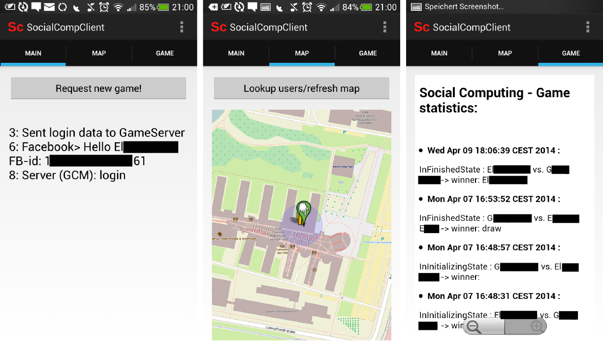
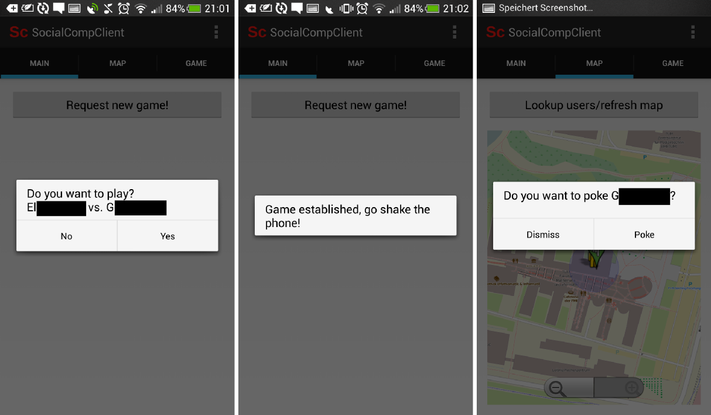
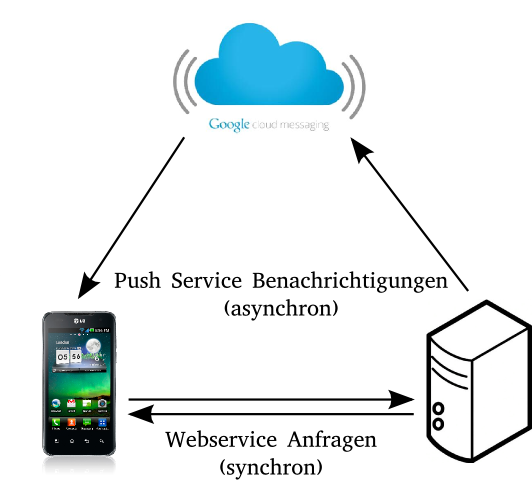
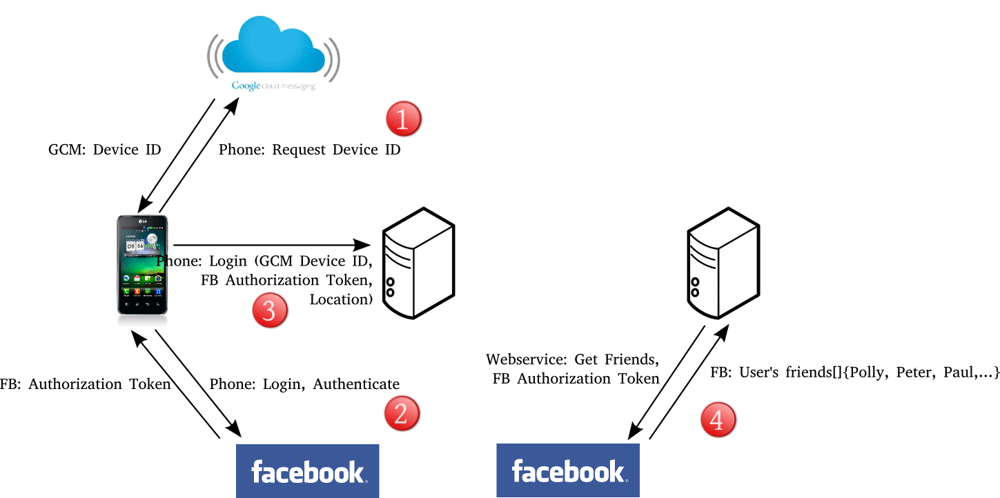

Aufgabe 2 (rev. 1)
Bemerkung: In dieser Aufgabenbeschreibung sind, sofern aus Gründen der Lesbarkeit männliche Bezeichner für Menschen benutzt werden, stets beide Geschlechter gemeint.
Grundsätzlicher Gegenstand
In dieser Aufgabe soll die Implementierung ihres in der Aufgabe 1 erarbeiteten Konzepts eines Location-Based Mobile Social Game durchgeführt werden. Die einzige formale Anforderung ist, dass die mobile Anwendung für Android Geräte geschrieben sein muss. Hierbei wird es jedoch unumgänglich sein, einen Teil Ihrer Anwendung als zentralen Service (z.B. ein Server auf dem ein Webservice läuft) zu implementieren, um eben zentrale Daten wie Nutzerpositionen zu verwalten oder bidirektionale Gerätekommunikation zu ermöglichen.
Um Ihnen die Implementierung zu erleichtern, haben wir eine Basisimplementierung erstellt, auf die Sie aufbauen können und die für ein sehr simples fiktives Spiel folgende, im Aufgabenteil 1 elaborierte Anforderungen erfüllt:
- Verwendung lokalitätsbezogener Daten des Nutzers und der Mitspieler als individueller Kontext des Nutzers
- Einbezug des long-term Social Contexts durch das soziale Netzwerk des Nutzers
- Einbezug des short-term Social Contexts durch eine momentan existierende Interaktionssituation und die Anwesenheit bestimmter weitere Mitspieler
Spieleablauf der Beispielimplementierung
Der Ablauf des Spiels ist in unserer Implementierung möglichst einfach gehalten: Nachdem geographische Daten (Geo-Locations/Positionen) des Nutzers und der Mitspieler sowie deren long-term Social Context (Freunde im sozialen Netzwerk) der Anwendung bekannt sind, kann ein Nutzer eine Anfrage für eine neues Spiel initiieren. Die Anwendung wählt daraufhin einen passenden Mitspieler aus, der Kriterien erfüllt, die auf der Basis des long & short-term Social Contexts und des individuellen Kontexts der Nutzer formuliert werden sollen. Diese sind (sehr vereinfachend) in der Basisimplementierung:
- Bekanntschaft der Nutzer im Sozialen Netzwerk (in diesem Fall verwenden wir "befreundet", damit Sie die Implementierung einfacher testen können)
- Aktuelle geographische Nähe der Nutzer (innerhalb 100 Meter)
Nehmen beide Nutzer das Spiel an, so wird als darauf folgende Spieleaktion das zeitnahe, gleichzeitige Schütteln der Mobiltelefone der Nutzer erwartet. Dies gilt als Bestätigung des short-term Social Contexts und führt zur Bestimmung des Gewinners (zufällig) dieses Spiels. Dem Gewinner werden hierauf Punkte auf sein Benutzerkonto der Anwendung gutgeschrieben Falls eine Spielanfrage nicht angenommen wird, werden dem entsprechenden Nutzer Punkte abgezogen.
Wie gesagt: Dies ist vom Spieldesign her nur ein sehr grobes Gerüst, von dem Sie abweichen können und sollen.
Grober infrastruktureller Aufbau der Beispielimplementierung
Die Beispielimplementierung verwendet sowohl eine Android Applikation als auch einen Webservice. Hierbei fungiert die Android Applikation größtenteils als einfacher Client, der aktiv oder reaktiv mit dem Webservice interagiert. Sämtliche Spielentscheidungen werden auf dem Webservice getroffen, nicht nur aufgrund der wesentlich einfacheren globalen Zustandsabbildung des Spiels, sondern auch um Probleme hinsichtlich Sicherheit (Betrug durch einen modifizierten Client) oder Privatsphäre (Austausch von Nutzerdaten zwischen Clients) zu minimieren.
Da der größte Teil der Spiele- und Verwaltungslogik im Webservice residiert, hat der Client hauptsächlich die Aufgabe als User Interface zu agieren, also auf externe Ereignisse zu reagieren oder weitere Ereignis(-ketten) im Webservice auszulösen. Dies entspricht der Rolle eines ThinClients (vgl. http://en.wikipedia.org/wiki/Thin_client)
Der Client kann hier direkte (synchrone) Anfragen ohne weiteres an den Webservice richten, jedoch setzen manche Schritte im Spieleverlauf (asynchrone) Anfragen an die Clients voraus. Dies ist nicht ohne weiteres möglich, da Mobilfunkanbieter keine festen IP-Adressen an Endgeräte vergeben, bzw. IP-Adressen unter mehreren Endgeräten geteilt werden. Diese Problematik wird in der Beispielimplementierung umgangen, indem ein Push-Message Service verwendet wird (vgl. http://en.wikipedia.org/wiki/Push_technology). Entsprechende Nachrichten werden durch den Webservice initiiert und an einen weiteren, cloudbasierten Webservice weitergeleitet, der weitere Infrastruktur und Mechanismen bereitstellt, um diese an die spezifischen Geräte zuzustellen.
Bereitgestellte Funktionen
Der Webservice verwaltet Nutzer- , soziale Netzwerk-, Geräte- und Spielverlaufsdaten in einer Datenbank, die unter anderem auch Anfragen mit geographischen Daten erlaubt. Durch diese Kombination werden folgende Funktionalitäten auf Seiten des Webservices ermöglicht, die der Client direkt erfragen, initieren oder indirekt durch den Spieleverlauf verändern kann:
- Einloggen/Registrierung neuer Mitspieler und Aggregation sozialer Netzerwerkdaten
- Aktualisierung der Geolocations der Nutzer in der Datenbank durch Client-Updates
- Abfrage befreundeter Mitspieler in der unmittelbaren Umgebung
- Initierung eines Spiels und Auswahl eines passenden Mitspielers unter Berücksichtigung seines geographischen und sozialen Kontexts
- Senden, Annehmen und Abbrechen einer Spieleanfrage an bzw. durch die beteiligten Mitspieler
- Auswerten der kurzen sozialen Interaktion beider Mitspieler
- Implementierung der Spielelogik und Verwaltung des Nutzerkontos für die Bepunktung
- Führen der globalen Spielestatistik und Verwaltung der Spielezustände
- Verwaltung von Geräteinformationen für den Push Nachrichtenservice
- Senden von Nachrichten an Geräte mittels Push Service
Entsprechend reduziert fallen die notwendigen bereitgestellten Funktionen für den Client aus:
- Senden einer Spieleanfrage
- Darstellung von Dialogen für den Spieleverlauf und konditionelles Versenden von weiteren Nachrichten an den Webservice
- Auslesen des Beschleunigungssensors und Bewertung der erhaltenen Messwerte für die soziale Interaktion
- Empfang und Verarbeitung von Nachrichten des Push Services (in ihrem Design können / sollen Sie natürlich auch andere Sensoren des Mobilgeräts verwenden)
Desweiteren bietet die Basisimplementierung weitere Funktionen an, die sich bei der Implementierung Ihrer Anwendung als hilfreich erweisen können:
- Darstellung aller Position von befreundeten Nutzern auf einer interaktiven Karte auf dem Client
- Unidirektionale Kommunikation zwischen Nutzern im nahen Umfeld ( "anstupsen" )
Abbildungen 1a und 1b zeigen hierbei Screenshots der Implementation des Clients für einige der bereitgestellten Funtionen. Abbildung 1a beinhaltet hier die Hauptansichten, das sogenannte MainFragment mit dem Button, ein Spiel zu erfragen, sowie zusätzliche Logging-Ausgabe. Weiterhin ist eine Kartenansicht mit den beteiligten Mitspielern (in diesem Fall, die eigene Position und die eines Mitspielers) abgebildet. Der letzte Screenshot zeigt die Spielestatistik.

Abbilding 1b beinhaltet hierbei einige Beispiele der Dialoge, die im Spiel verwendet werden; in diesem Fall für den erhaltenen Spielerequest, die Interaktion und die Funktion einen Mitspieler anzustupsen.

Verwendete Technologien und deren Motivation
Die Hauptmotivation bei der Auswahl der verwendeten Technologien, aber auch der Implentierungsdetails, ist es, Ihnen verbreitete, bewährte und einfach zu nutzende Tools an die Hand zu geben, die sehr gut durch die Nutzer- und Entwickler-Communities unterstützt werden. Das heisst, dass viele Lösungen für eventuell auftretende Teilprobleme auf entsprechenden Platformen (Foren, Stackoverflow, Mailinglisten) bereits zu finden sind oder diskutiert wurden. Wir ermutigen Sie hiermit also auch, derartige Quellen zu verwenden. Wird Code von externen Quellen oder anderen Gruppen übernommen müssen Sie dies allerdings dokumentieren ('zitieren'). Eine weitere Motivation für die gewählten Technologien ist, dass sie einen minimalen Installations- bzw. Einrichtungsaufwand mit sich bringen und darauf ausgerichtet sind, eine zügige Entwicklung mit minimalen Overhead zu gestatten (vgl. Lean Software Development http://en.wikipedia.org/wiki/Lean_software_development).
Ihnen ist freigestellt, andere Technologien zu verwenden, sofern dies ausreichend dokumentiert ist. Wir können Ihnen dafür jedoch keine aktive Unterstützung bieten.
Der Client ist für Android 4.1+ implementiert, der Webservice verwendet das Play Framework 2.2, beide Komponenten machen demnach von der Programmiersprache Java Gebrauch - mit dieser hatten Sie im Laufe Ihres Studiums hinreichend Kontakt.
Die Client-Server Architektur folgt den Prinzipien eines modernen RESTful Services (http://en.wikipedia.org/wiki/Representational_state_transfer), d.h. sie folgt der Idee der Separation of Concerns, so dass:
- Der Client keine Speicherung von Spiele/Nutzerdaten durchführt (dies ist Aufgabe des Webservices)
- Der Webservice keine darstellenden oder interaktiven Komponenten verwaltet
- Der Webservice insofern zustandlos ist, dass er keine Buchführung der Zustände der Clients macht
Der Austausch von Daten zwischen Client und Server erfolgt in allen Fällen mit Hilfe des JSON Datenformats (http://www.json.org/), direkte Anforderungen des Clients werden als HTTP GET/POST (http://en.wikipedia.org/wiki/Hypertext_Transfer_Protocol) Requests an den Webservice gerichtet. Asynchrone Nachrichten vom Webservice and die Clients werden durch den Push Service (Google Cloud Messaging Service) durchgeführt.
Social Network: Facebook
Facebook ist die wohl (noch) am weitesten verbreitete Social Networking Plattform. Zum Zugriff auf Elemente von Facebook gibt es verschiedene APIs an die wir nutzen werden. Wir verwenden für die Entwicklung sowohl das offizielle Android Entickler Framework verwended (Facebook Android SDK, https://developers.facebook.com/docs/android/) als auch restFB (http://restfb.com/) für die Webservice Seite, da es kein offizielles Entwicklerframework von Facebook ausserhalb mobiler Anwendungen gibt. Beide Frameworks sind gut dokumentiert und werden aktiv genutzt und weiterentwickelt. Falls Sie kein Mitglied bei Facebook sind, oder Ihren persönlichen Account nicht für das Praktikum nutzen möchten, können Sie sich für das Praktikum ein eigenes Konto ohne persönliche Informationen anlegen. Ihnen ist freigestellt, ob sie eine andere Social Networking Platform verwenden (z.B. Diaspora) oder entsprechende eigene Funktionen auf dem Webservice implementieren. Wir können Ihnen hierfür jedoch keine Unterstützung anbieten.
Webservice: Play Framework
Das Play Framework (http://www.playframework.com/) ist ein Open Source Framework zur Entwicklung von Webservices. Es bietet dabei einen vollen Entwicklerstack an: unter anderem Web Applikation, Compiler, Web Server, Datenbank, Cache Management, Dependency Management, Asynchronous I/O und Unit Testing. Play verwendet hier auch Hot Code Reloading, d.h. sobald der Quellcode verändert wurde, wird er compiliert und in die laufende Applikation eingebunden; somit können Sie den Webservice im laufenden Betrieb weiterentwickeln und testen. Da der Webserver in Play standardmäßig eingebunden ist, entfallen die entsprechenden Einrichtungs- und Installationsschritte. Das integrierte Dependency Management lädt dabei externe Libraries automatisch aus bekannten Paketquellen nach, wie Sie es beim Ausführen der Beispielimplementierung sehen werden. Weiterhin können Sie Play Projekte als Eclipse, Intellij Idea oder Netbeans Projekte exportieren, um ihre Entwicklungsumgebung konsistent zu halten. Weiterhin benötigt die Installation und Ausführung eines Webservices keinerlei zusätzliche Konfiguration und Anpassungen Ihres Betriebssystems/Laufzeitumgebung. Auch hier ist die Dokumentation auf der Projektsite sehr gut und edukativ.
Datenbank: MonogDB
Um Datenbankanfragen bezüglich Geo-Locations (also 2-dimensionale Indices als Kugelkoordinaten) durchführen zu können sind idR. spezielle Datenbanken oder Datenbankerweiterungen notwendig. Klassisch werden hierfür PostGIS, eine Erweiterung der Postgres Datenbank um Geo-Funktionen, oder Oracle Spatial verwendet. Der Nachteil für dieses Praktikum ist der vergleichsweise hohe Einrichtungsaufwand und die Verwendung von speziellen SQL Syntaxen/Funktionen, die in den gängigen objektrelationalen Mappern nicht abgedeckt werden, also eine "manuelle" Eingabe der SQL-Requests erfordern.
MongoDB (https://www.mongodb.org/) unterstützt als prominentester Vertreter der NoSQL Datenbanken Geospatial Indices erst seit Kurzem. Der Funktionsumfang ist diesbezüglich limitierter, aber für dieses Praktikum ausreichend. Für die Wahl entscheidend war vor allem die Installationsprozedur, die keinerlei zusätzliche Konfiguration oder Anpassungen Ihres Betriebssystems/ Ihrer Laufzeitumgebung benötigt. Daten werden bei MongoDB nicht relational hinterlegt, sondern als Dokumente verwaltet, die Datenbank orientiert sich somit eher an Datenstrukturen, die sie aus dem Programmieralltag kennen. Für die Kommunikation des Webservices mit der Datenbank wird hier Jongo (http://jongo.org/) verwendet, da die API hier benutzerfreundlicher ist, als die eigene Java API, die mit MongoDB mitgeliefert wird. Somit verwendet der Webservice nicht die mit dem Play Framework mitgelieferten Funktionen bzw. objektrelationalen Mapper zur Datenbankanbindung. Wie Sie in der Beispielimplementierung sehen werden, ist die Datenbankanbindung trotzdem sehr schlank möglich.
Die Dokumentation der MonogDB-Funktionen ist sehr gut, die von Jongo ist ausreichend, jedoch lassen sich Beispiele auf der MongoDB Site direkt als Jongo-basierter Request umsetzen.
Push Service: Google Play Service
Die Verwendung des Google eigenen cloudbasierten Push Message Services (http://developer.android.com/google/gcm/index.html) bedingt sich aus der Wahl von Android als Entwicklungsumgebung für die mobile Anwendung.
Map Data: OpenStreetMaps
Die Wahl, OpenStreetMaps als Kartenmaterial (http://www.openstreetmap.org) und die Kartendarstellung mittels OSMDroid (https://code.google.com/p/osmdroid/) für die Clientanwendung zu verwenden, ist hauptsächlich durch die Restriktionen (Traffic und Request Quotas) der Verwendung des Google-eigenen Kartenservices motiviert. Bezüglich Qualität des Kartenmaterials für Mitteleuropa und Basisfunktionalität der Kartendarstellung stehen OpenSteetMaps GoogleMaps in nichts nach. Die Dokumentation von OSMDroid ist nicht komplett vollständig, jedoch finden sich auf Stackoverflow hinreichend Beispiele.
Kommunikationsabläufe
Um Ihnen die Einarbeitung in die Beispielimplementierung zu erleichtern, werden in diesem Abschnitt einige Kommunikationsabläufe in der Applikation beispielhaft erläutert.
Wie zuvor dargelegt, verwendet die Implementierung zwei Kommunikationsschemata, einerseits die direkte Kommunikation mit dem Webservice, die durch den Client initiiert wird und andererseits die Google Cloud Messaging basierte Push Kommunikation, die durch den Webservice initiiert wird, um dem Client bspw. Spielereignisse mitzuteilen. Dies ist schematisch in der Abbildung 1 dargestellt. 
Die einzelnen Funktionen, die der Webservice bereitstellt, sind für Clients über einzelne URLs erreichbar. Als User-ID, der zur Identifikation der Nutzer dient, wird direkt die Facebook-ID des Nutzers verwendet. Dies hat den Vorteil, dass sowohl Client als auch Server sich nicht um ein zusätzliches Mapping von Nutzerprofildaten auf eindeutigen Nutzer-IDs kümmern müssen.
Der Webservice bietet für das Spiel folgende Funktionen an, wobei Parameter in der URL mit ":parametername" bezeichnet werden:
- HTTP POST /users/:facebookAuthenticationToken/:GoogleCloudMessagingDeviceID/:longitude/:latitude/login - Client-Login bei dem Webservice, um sich für das Spiel anzumelden bzw. zu registrieren. Hier werden alle notwendigen Informationen übertragen, damit der User am Spiel teilnehmen kann.
- HTTP POST /positions/:facebookID/:longitude/:latitude/update - der Client verwendet diese Funktion des Webservers, um seine neue Position mitzuteilen.
- HTTP GET /users/:facebookID/getNearbyUsers - Hiermit kann der Client andere Nutzer in der Umgebung erfragen (dies wird für die Kartendarstellung beim CLient verwendet)
- HTTP POST /games/:facebookID/requestNew - Sendet eine Anfrage, um ein neues Spiel zu beginnen. Der Webservice wird daraufhin einen geeigneten Gegner für das Spiel ermitteln. Die Benachrichtigung der Clients für ein neues Spiel erfolgt dann über den Push Message Service, wobei dem Client ein Spiele-ID (gameID) mitgeteilt wird, um das Spiel eindeutig zu identifizieren.
- HTTP POST /games/:gameID/:facebookID/abort - Signalisiert dem Webserver, dass das Spiel mit dem entsprechenden Spiele-ID vom User mit dem entsprechenden Facebook-ID abgebrochen wird. Beiden Nutzern werden dann Nachrichten über den Push Message Service zugesendet, die über den Abbruch des Spiels informieren. Falls ein Nutzer das Spiel nicht annimmt, werden ihm Punkte abgezogen.
- HTTP POST /games/:gameID/:facebookID/accept - Signalisiert dem Webserver, dass das Spiel durch den ensprechenden Nutzer angenommen wurde. Wenn beide Nutzer das Spiel angenommen haben, werden diese über das zustande gekommende Spiel per Push Message Service informiert. Die Clients werden nun die Nutzer zur durchführung der Interaktion anleiten.
- HTTP POST /games/:gameID/:facebookID/interaction - Informiert den Webservice, dass einer der Nutzer eine Interaktion durchgeführt hat. Haben dies beide Nutzer durchgeführt, so werden diese über den Spielestand (gewonnen/verloren) per Push Message Service informiert.
- HTTP POST /games/:senderFacebookID/:receiverFacebookID/poke - Sendet einem anderen Nutzer per Push Message Service eine Nachricht, dass er/sie "angestupst" wurde.
Der Login-Prozess ist hierbei der komplexeste Vorgang des Spielverlaufes, da er weitere Parteien (Webservices) involviert. Abbildung 2 zeigt hier schematisch den Ablauf.

Der Anmeldeprozess wird durch den Client initiiert. Für den Spieleablauf ist es notwendig, dass der Webservice die Gerätekennung beim Google Cloud Messaging Service kennt, damit diesem Gerät zu einem späteren Zeitpunkt Push Messages geschickt werden können. Überdies ist es notwendig, dass der Webservice die Freundesliste des Nutzers von Facebook erfragen kann, um Information über den long-term Social Context zu haben. Es ist dabei zu beachten, dass die Beispielimplementierung keinen Unterschied zwischen Login und Registrierung macht, die Nutzerdaten werden entweder neu angelegt bei erstmaliger Anmeldung oder aktualisiert, so dass Änderungen der Freundesliste bei Facebook dem Spiel nach einem neuen Login bekannt sind. Der Ablauf der Anmeldung ist hierbei folgender:
- Der Client meldet sich bei dem Google Cloud Messaging Service an und erhält dabei eine eigene ID zur Geräteidentifikation.
- Der Client meldet sich bei Facebook an. Beim erstmaligen Starten der Clientapplikation muss der Nutzer zustimmen, dass die Clientapplikation Zugriff auf die Facebook-Nutzerdaten erhält. Sobald dies geschehen ist, erhält die Applikation ein Token zur Authentifizierung bei Facebook. Dieses Token kann für zukünftige Zugriffe auf die Nutzerdaten verwendet werden, es werden dabei keine zusätzlichlichen Account-Daten des Nutzers notwendig.
- Der Client sendet sowohl die Device-ID, das Facebook-Authentifizierungstoken und die aktuelle Position an den Webservice.
- Der Webservice kann nun, ermächtigt durch das Authentifizierungstoken, in der Rolle des Nutzers der Client-Applikation bei Facebook die Nutzerdaten erfragen und so die Freundesliste lokal in der Datenbank hinterlegen.
Toolchain und Projekteinrichtung
Die folgende Sektion soll Ihnen einen Überblick darüber geben, wie Sie die Beispielimplementierung zum Laufen bringen können, damit Sie darauf aufbauend Ihre eigene Implementation durchführen können. Es wird (gerade im Hinblick auf aufkommende Fragen) dringend empfohlen, sich zunächst mit der angegebene einführende oder weiterführende Literatur bzw. Dokumentation zu beschäftigen, bevor Fragen geposted werden.
Herunterladen der Quellcodes
Sowohl der Webservice als auch der Client sind als Quellen auf unseren öffentlichen Repositories bei GitHub Verfügbar: https://github.com/tum-social-gaming/
Für die Versionsverwaltung verwenden wir entsprechend git, welches von http://git-scm.com/downloads heruntergeladen wird. Alternativ gibt es für Windows-Nutzer einen komfortablen GUI Client direkt für github unter https://windows.github.com/. Für den folgenden Abschnitt werden wir uns aber auf die Verwendung von git aus dem Terminal heraus beschränken. Eine sehr gute Einführung für git und dessen Verwendung als Version Control System ist auf http://git-scm.com/book verfügbar.
Das Repository des Webservices ist unter folgender URL zu erreichen https://github.com/tum-social-gaming/SocialGamingServer.git und kann entsprechend mit folgendem Terminalkommando heruntergeladen werden:
git clone https://github.com/tum-social-gaming/SocialGamingServer.git
Äquivalent hierzu ist das Repository die Client-Applikation unter https://github.com/tum-social-gaming/SocialGamingClient.git verfügbar und kann mit
git clone https://github.com/tum-social-gaming/SocialGamingClient.git
heruntergeladen werden. Bei dem Quellcode für den Webservice handelt es sich um ein eigenes Play Framework-Projekt, welches Sie direkt mit den Play Framework Tools starten können; Sie brauchen hierfür also keine IDE (sie können jedoch eine verwenden). Die Abschnitte MongoDB und Play Framework erläutern genauer, wie Sie den Quellcode ausführbar machen können. Bei den Quellen für den SocialGamingClient sind die Eclipse Projektdateien mitgeliefert.
MongoDB
Die Installation der Datenbank gestaltet sich einfach, da sie lediglich unter http://www.mongodb.org/downloads das entsprechende Paket für ihre Platform herunterladen, dieses entpacken und das enthaltene Executable starten müssen. MongoDB legt dabei die Datenbank in ein Standardverzeichnis ab, dieses ist plattformspezifisch und muss unter Umständen noch angelegt werden. Alternativ kann ein anderes als Programmparameter übergeben werden. Genaueres finden Sie unter http://docs.mongodb.org/manual/installation/. MongoDB bietet auch eine Konsole an, mit der Sie auf die Datenbank mittels JavaScript zugreifen können. Dies kann sich als nützlich erweisen, falls Sie die hinterlegten Daten manuell verifizieren bzw. verändern möchten (vgl. http://docs.mongodb.org/manual/installation/).
Play Framework
Ähnlich einfach wie die Installation der Datenbank geht auch die des Play Frameworks von statten. Es wird empfohlen die Classic Distribution unter http://www.playframework.com/download für Ihre Platform herunterzuladen. Unsere Beispielimplementierung wurde mit Play 2.2.1 getestet. Wenn Sie die Distribution entpackt haben und ihre Java und MongoDB Installation gültig ist, dann können Sie direkt in das Quellverzeichnis des Webservices wechseln und dort mit dem Ausführen des Kommandos:
../Pfad/Zur/PlayInstallation/play ~run
den Webservice starten. Dieser sollte auf localhost unter dem Port 9000 verfügbar sein. Wenn sie diese Adresse im Browser öffnen, sollten die aktuellen Spielstatistiken angezeigt werden. Genaueres zur Installation und die ersten Schritte mit Play sind unter http://www.playframework.com/documentation/2.2.x/Home ausführlichst dokumentiert.
Für die Verwendung einer Entwicklungsumgebung werden die entsprechenden Schritte unter http://www.playframework.com/documentation/2.1.x/IDE erläutert. Sie brauchen bei der IDE keine Build bzw. Runkonfigurationen angeben, da das play Kommando ein automatisches Build-Tool beinhaltet und veränderter Quellcode automatisch compiliert und die laufende Applikation aktualisiert wird.
Android Entwicklungsumgebung
Das Aufsetzen der Android Entwicklungsumgenung gestaltet sich etwas umfangreicher als die Installationen zuvor, es wird entsprechend nahegelegt, dass Sie sich im Bedarfsfall mit der Dokumentation unter http://developer.android.com/sdk/index.html ausreichend auseinandersetzen. Als Entwicklungsumgebung stehen mittlerweile Eclipse + Android Developer Tools oder Android Studio zur verfügung. Wir empfehlen aus Konsistenzgründen Eclipse + Android Developer Tools, vor allem, da die Dokumentation der Google-eigenen Developer Tools aber auch des Facebook SDKs sich auf diese Umgebung beziehen.
Desweiteren muss auch das Facebook SDK und Google Play SDK für eben diese beiden Umgebungen installiert werden (siehe nächste Unterabschnitte).
Das Repository der Client Applikation sollten Sie in ihr Eclipse + ADT Projektverzeichnis importieren können, die entsprechenden Abhängigkeiten zum Google Play SDK und Facebook SDK müssen Sie jedoch manuell einrichten.
Google Developer / Google Cloud Messaging
Da die Beispielimplementierung den Google-eigenen Push Service verwendet ist es notwendig, einen eigenen Google Entwickler Account anzumelden und ein Google Projekt einzurichten, welches diesen Service verwendet. Unter http://developer.android.com/google/gcm/gs.html sind die notwendigen Einrichtungsschritte beschrieben.
Weiterhin muss das Google Play SDK in das Eclipse Projekt eingebunden werden. Hierzu müssen Sie das Google Play SDK auf der mobilen Platform und für ihre IDE installieren. Genaueres findet sich unter http://developer.android.com/google/play-services/setup.html.
Hinweis: Es kann sein, dass Ihre Anwendung mehr Nachrichten pro Sekunde pro Nutzer versendet, als die Standardeinstellung für den Google Push Message Service als Quota zulässt. Sie können diese in der Google Developer Console für ihr Projekt unter dem Menüpunkt APIs & auth/APIs/Google Cloud Messaging for Android/Quota ändern.
Facebook App Developer
Damit die Client Applikation im Namen des Nutzers auf Facebook Nutzerprofile zugreifen kann, ist es notwendig diese bei https://developers.facebook.com einzurichten bzw. anzumelden. Hierfür brauchen sie wiederum (im Team) Facebook Entwickler Accounts. Diese erhält man nur, wenn ihre Facebook Accounts verifiziert sind, siehe hierzu https://www.facebook.com/help/167551763306531.
Die Anmeldung einer neuen Facebook "App" ist unter https://developers.facebook.com/docs/android/login-with-facebook/ zu finden.
Die genaue Einrichtungsprozedur, um das Android SDK einzurichten, wird unter https://developers.facebook.com/docs/android/getting-started/ ausführlich beschrieben; besonders wichtig ist der Unterpunkt "Link to the SDK project and configure the Facebook app ID" im Abschnitt 6, wobei der Facebook App ID bei unserem Client in der Datei Configuration.java zu setzen ist (siehe Abschnitt "Konfiguration des Webservice und Clients").
WICHTIG: Solange eine Facebook App nicht offiziell öffentlich zugänglich ist (was für dieses Praktikum der Fall sein wird), müssen Geräte, die diese App verwenden, Facebook bekannt sein. In der Facebook Dokumentation zum SDK wird hierbei von "KeyHashes" gesprochen, diese ist pro Gerät/Facebook App eindeutig und muss entsprechend im Dashboard für ihre Facebook App eingetragen sein. Wie man den KeyHash für ein Gerät erfragen kann ist unter https://developers.facebook.com/docs/android/getting-started im Unterpunkt 4 dokumentiert. Aus Komfortgründen gibt die Client Applikation diesen KeyHash auch im Applikations-Log innerhalb der Entwicklungsumgebung (Eclipse + ADT) aus.
WICHTIG: Um Ihre Applikation mit anderen Nutzern zu testen, müssen diese als Entwickler oder Test-User bekannt sein. Im Dashboard der Applikation, unter dem Menupunkt "Roles" können Sie weitere Nutzer Ihrem Projekt hinzufügen.
Konfiguration des Webservice und Clients
Die Konfiguration des Webservice und der Clients bezüglich Credentials für das Google Developer Projekt und Facebook App, sowie Adressen (Server IP/Port) und Spieleeinstellungen sind als Klassenattribute in den Klassen(-dateien):
- src/de/tum/socialcomp/android/Configuration.java für den Client
- app/util/GameConfiguration.java
einzusehen und entsprechend zu modifizieren. Die Kommentare sollten hierbei selbsterklärend sein.
Technische Anmerkungen
Dieser Abschnitt dient dazu Hinweise bezüglich der Implementierung zu geben, um Ihnen Ihre Implementierung zu erleichtern. Wir behalten uns vor, diesn Abschnitt im Laufe des Praktikums sukzessive zu erweitern und anzupassen. Dies wird durch entsprechende Versionierung dokumentiert.